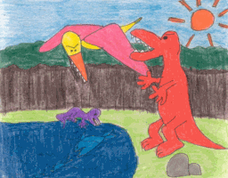
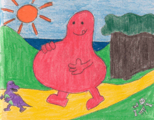

MR. HUNGRY
|
Now, in Sweden, there were no supermarkets, and animals simply walked around eating each other. You might think this would be scary, but it was not. If you were an animal there, you would not feel sad if something ate you, because the very next day, the thing that ate you would probably be eaten by something else!
|

|
|
Well, Sweden happened to be the home of someone called Mr. Hungry. Mr. Hungry was big and tall, and fat and wobbly. As you might expect, he was always hungry!
|  |


©2002 Janet